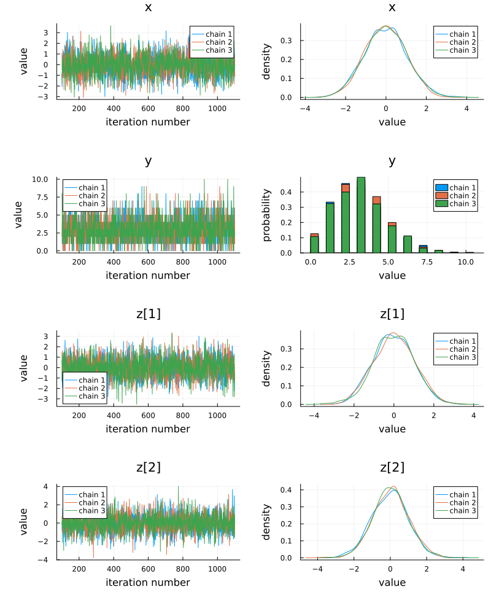
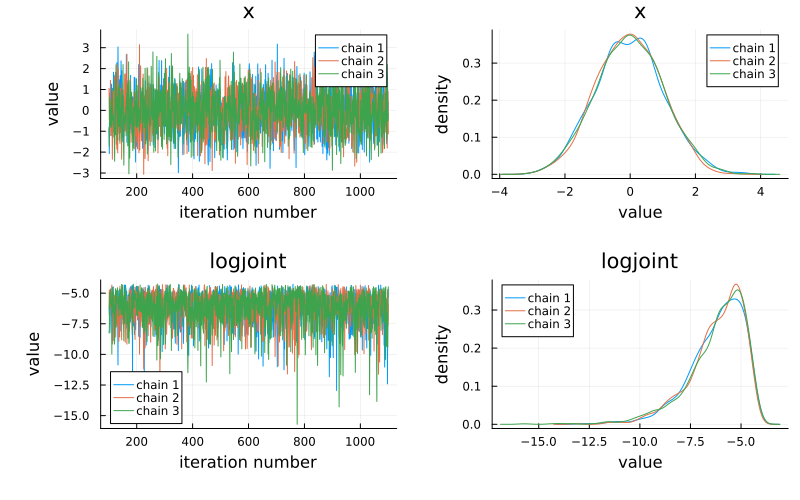
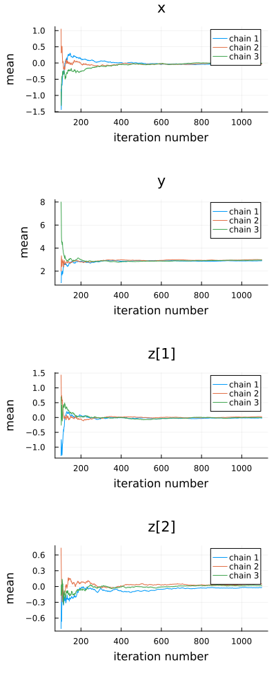
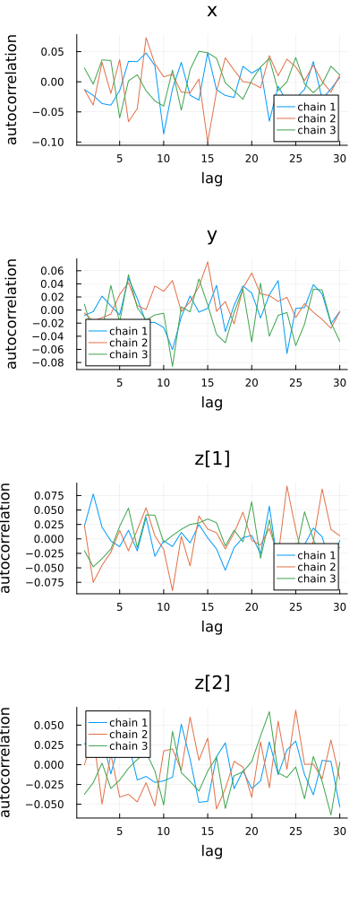

Plotting
FlexiChains defines a few plot recipes which allows you to use the Plots.jl ecosystem to visualise chains. In particular, you will want to import StatsPlots.jl.
Plot types
What kind of plot you get in when using Plots.jl is controlled mainly by the seriestype keyword argument. For example, plot(..., seriestype=:histogram) will produce a histogram. In fact, calling histogram(...) simply redirects to plot(..., seriestype=:histogram).
The following series types are supported for FlexiChain objects.
seriestype= | Equivalent function | Description |
|---|---|---|
:traceplot | FlexiChains.traceplot() | Trace plot of samples |
:histogram | Plots.histogram() | Histogram of samples |
:density | Plots.density() | Kernel density estimate of samples |
:mixeddensity | FlexiChains.mixeddensity() | Density plot or histogram, depending on whether the parameter is continuous or discrete |
:meanplot | FlexiChains.meanplot() | Running mean of samples |
:autocorplot | FlexiChains.autocorplot() | Autocorrelation of samples |
:traceplot_and_density | Plots.plot() (with no seriestype argument) | Trace plot and mixed density side-by-side |
Please note that the identifiers traceplot, meanplot, mixeddensity, and autocorplot are also exported by MCMCChains.jl and also currently re-exported by Turing.jl. The FlexiChains versions are marked as public but not exported. To make sure you are using the FlexiChains versions, you must prefix them with the module name: FlexiChains.traceplot(...). Otherwise, you may run into unexpected errors.
There are still substantially fewer options than in MCMCChains.jl. Other plot types will be added over time, but in the meantime if you need features from MCMCChains, you can convert a FlexiChain to an MCMCChains.Chains object using MCMCChains.Chains(chn).
Signature
The above plotting functions should be called with the following signature:
plotfunc(
chn[, param_or_params];
pool_chains::Bool=false,
split_varnames::Bool=(chn isa FlexiChain{<:VarName}),
kwargs...
)Positional arguments
chnis aFlexiChainobject.param_or_paramsis optional, and can be anything that is used to index into a chain. If not provided, all parameters in the chain will be plotted.
Keyword arguments
If
pool_chains=true, then samples from all chains are concatenated before plotting densities or histograms. Otherwise, each chain is plotted separately.split_varnamesis only applicable if the chain key type is a VarName (as would be obtained from Turing). It controls whether vector-valued parameters are split into their individual components. For example, ifzis a 2-dimensional parameter, then settingsplit_varnames=truewill plotz[1]andz[2]separately.
Gallery
Here, we demonstrate the plotting features with a typical chain sampled from a Turing model. However, the general principles are applicable to any FlexiChain object.
We'll make a model with different types of parameters (continuous, discrete, and vector-valued).
using FlexiChains, StatsPlots, Turing
@model function f()
x ~ Normal()
y ~ Poisson(3)
z ~ MvNormal(zeros(2), I)
end
chn = sample(
f(), MH(), MCMCThreads(), 1000, 3;
discard_initial=100, chain_type=VNChain, progress=false
)FlexiChain (1000 iterations, 3 chains)
↓ iter=101:1100 | → chain=1:3
Parameter type VarName
Parameters x, y, z
Extra keys :logprior, :loglikelihood, :logjoint
Notice that the chain has not split z up into z[1] and z[2]. However, when plotting, it will be automatically split up for you:
plot(chn)
Notice that Extra keys, like the log probabilities, are not plotted by default. If you want to plot specific parameter(s), you can specify them as the second positional argument. In general, the second argument can be anything that you can index into a chain with. This means a symbol, a parameter, a FlexiChains.Extra, a sub-VarName, or a vector thereof:
plot(chn, [@varname(x), :logjoint])
While the density plots above are useful for comparing whether the chains have mixed well, the overlapping histograms are harder to make sense of. You can combine the histograms by setting pool_chains=true. We'll also hide the legend to reduce clutter (keyword arguments like legend are simply passed through to Plots.jl):
plot(chn; pool_chains=true, legend=false)Docstrings
FlexiChains.traceplot — FunctionFlexiChains.traceplot(
chn::FlexiChain{TKey}[, param_or_params];
kwargs...
)Create a trace plot of the specified parameter(s) in the given FlexiChain.
If no parameters are specified, this will plot all parameters in the chain. Note that non-parameter, i.e. Extra, keys are excluded by default. If you want to plot all keys, you can explicitly pass all keys with traceplot(chn, :).
Keyword arguments are forwarded to Plots.jl's functions.
FlexiChains.traceplot(chn)FlexiChains.meanplot — FunctionFlexiChains.meanplot(
chn::FlexiChain{TKey}[, param_or_params];
kwargs...
)Plot the running mean of the specified parameter(s) in the given FlexiChain.
If no parameters are specified, this will plot all parameters in the chain. Note that non-parameter, i.e. Extra, keys are excluded by default. If you want to plot all keys, you can explicitly pass all keys with meanplot(chn, :).
Keyword arguments are forwarded to Plots.jl's functions.
FlexiChains.meanplot(chn)
FlexiChains.autocorplot — FunctionFlexiChains.autocorplot(
chn::FlexiChain{TKey}[, param_or_params];
lags=1:min(niters(chn)-1, round(Int,10*log10(niters(chn)))),
demean=true,
kwargs...
)Plot the autocorrelation of the specified parameter(s) in the given FlexiChain.
The lags keyword argument can be used to specify which lags to plot. If nothing is passed (the default), this is set to the integers from 1 to min(niters-1, round(Int,10*log10(niters))) where niters is the number of iterations in the chain. This mimics the default behaviour of StatsBase.autocor.
The demean keyword argument specifies whether to subtract the mean of the parameter before computing the autocorrelation, and is passed to StatsBase.autocor.
If no parameters are specified, this will plot all parameters in the chain. Note that non-parameter, i.e. Extra, keys are excluded by default. If you want to plot all keys, you can explicitly pass all keys with autocorplot(chn, :).
Keyword arguments are forwarded to Plots.jl's functions.
FlexiChains.autocorplot(chn)
FlexiChains.mixeddensity — FunctionFlexiChains.mixeddensity(
chn::FlexiChain{TKey}[, param_or_params];
kwargs...
)Create either a density plot, or a histogram, of the specified parameter(s) in the given FlexiChain. Continuous-valued parameters are plotted using density plots, discrete-valued parameters with histograms.
If no parameters are specified, this will plot all parameters in the chain. Note that non-parameter, i.e. Extra, keys are excluded by default. If you want to plot all keys, you can explicitly pass all keys with mixeddensity(chn, :).
Keyword arguments are forwarded to Plots.jl's functions.
FlexiChains.mixeddensity(chn)